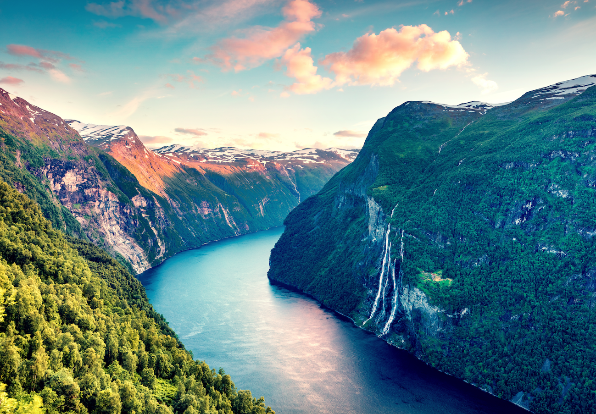

Best places to Visit
The Dolomites, Italy
With jagged mountain peaks, charming towns, and picturesque lakes, the Dolomites are a hiking paradise during summer
and a snow-covered wonderland for skiers in winter
Fjords of Norway
Majestic fjords, waterfalls, and dramatic landscapes make Norway’s fjord region a must-see. Take a scenic cruise for the best views

Prague, Czech Republic
Known as the “City of a Hundred Spires,” Prague boasts Gothic architecture, historic squares, and the iconic Charles Bridge
The Swiss Alps
Snow-capped peaks, pristine lakes, and charming villages await. Explore hiking trails or take a scenic train ride
Bavaria, Germany
Explore fairytale castles like Neuschwanstein, visit charming towns, and savor hearty German cuisine